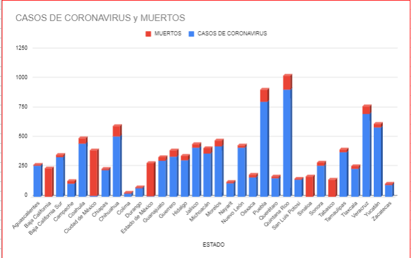
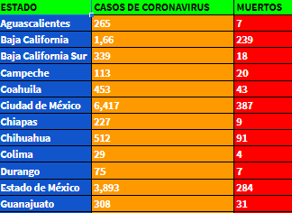
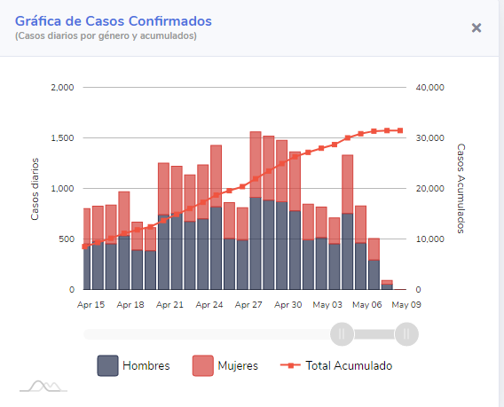
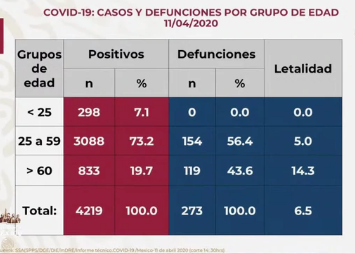

<ion-header>
  <ion-toolbar color="danger">
    <ion-buttons>
      <ion-menu-button></ion-menu-button>      
    <ion-title>Graficas</ion-title>
    </ion-buttons>
  </ion-toolbar>
</ion-header>

<ion-content>
  <ion-slides pager="true" [options]="slideOpts">
    <ion-slide>
      <ion-card>
        
        <h5>Grafica de Mexico</h5>
        <ion-button expand="block" (click)="documento()" color="danger">Descubre nuestros datos</ion-button><br>
      </ion-card>
    </ion-slide>
    <ion-slide>
      <ion-card>
        
        <h5>Tabla de Infectados</h5>
      </ion-card>
    </ion-slide>
  </ion-slides>
  <ion-slides pager="true" [options]="slideOpts">
    <ion-slide>
      <ion-card>
        
        <h5>Grafica de la Secretaria de Salud</h5>
        <ion-button expand="block" (click)="documento1()" color="danger">Datos oficiales de la SS</ion-button><br>
      </ion-card>
    </ion-slide>
    <ion-slide>
      <ion-card>
        
        <h5>Tabla de Infectados</h5>
      </ion-card>
    </ion-slide>
  </ion-slides>
</ion-content>
